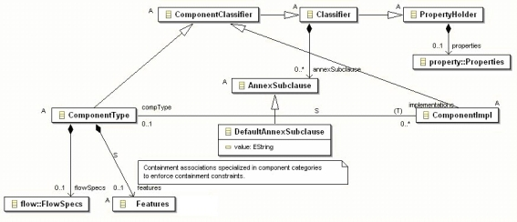
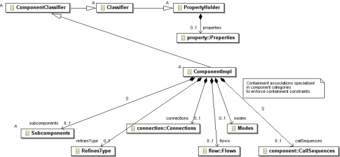

Previous
Next
Previous
Next 
| 4.3 Component Types, Implementations, and Subcomponents |
Component types can contain features, flow specifications,
property associations, and annex
subclauses. Figure 15 shows the content of a component type. The ComponentType class has
containment associations to Features, FlowSpecs, and through inheritance to AnnexSubclause
and Properties. A component type can contain zero or one object of each of these classes,
and
zero or more objects in the case of AnnexSubclause.
The AnnexSubclause abstract class represents annex subclauses that can
be declared for any
Classifier, i.e., for component types, component implementations, and port group types (see
Annex C.4.8).

Figure 15 Contents of Component Types
Representing the subclauses as explicit objects has several
advantages:
- The XML representation preserves the subclause structure - making XML documents quite readable.
- The existence of such a subclause object provides a distinction between the lack of such a subclause and a subclause with the none statement. This distinction is necessary to reproduce textual AADL.
The Features class represents the features subclause. It is an abstract
class with concrete
subclasses that record category-specific feature limitations. The association is shown as a
containment association that is specialized for each of the component category-specific concrete
subclasses of Features (see Annex C.4.7). Each specialization restricts the containment
association for a specific component type to its respective Features subclass. The use
of the
same label for the containment association and its specializations permits the contained object to
be retrieved by subclass-specific methods as well as a generic method of ComponentType.
The reference association from the ComponentImpl class to the ComponentType
class is
specialized for each of the category-specific concrete subclasses of ComponentImpl and
ComponentType. Each specialization restricts the reference association to the respective category-
specific subclass (see Annex C.4.4). The use of the same label for the two ends of the reference
association and of its specializations permits the referenced objects to be retrieved by subclass-
specific methods as well as a generic method of the abstract classes.
The FlowSpecs class represents the flow specifications subclause.
It is a concrete class that
contains individual flow specifications.
The Properties class represents the properties subclause. It is a concrete
class that contains
property associations. Its XML element tag is properties.

Figure 16 Contents of Component Implementations
Figure 16 shows the content of a
component implementation. The ComponentImpl class has
containment associations to the Subcomponents, RefinesType, Connections, CallSequences,
Flows, Modes classes, and through inheritance to the AnnexSubclause (see Figure 15) and
Properties classes. A component type can contain zero or
one object of each of these classes,
zero or more objects in the case of AnnexSubclauses.
The Subcomponents class represents the subcomponents subclause. It is
an abstract class with
concrete subclasses that record category-specific subcomponent limitations. The association is
shown as a containment association that is specialized for each of the component category-
specific concrete subclasses of Subcomponents (see Annex C.4.4). Each specialization restricts
the containment association for a specific component implementation to its respective
Subcomponents subclass. The use of the same label for the containment association and its
specializations permits the contained object to be retrieved by subclass-specific methods as well
as a generic method of ComponentImpl.
The CallSequences class represents the calls subclause. It is a concrete
class which is contained
in ComponentImpl by a containment association that is specialized for each of the component
category-specific concrete subclasses of ComponentImpl (see Annex C.4.4). Each specialization
determines whether the calls subclause is legal for a specific component category. The use of
the
same label for the containment association and its specializations permits the contained object to
be retrieved by subclass-specific methods as well as a generic method of ComponentImpl.
The reference association between the component implementation and its component type
represents a component type inheritance relationship. Similarly, the reference association
between
a subcomponent and its classifier represents a component type inheritance relationship.
This
means that the features defined in the component type are inherited by component
implementations as well as by subcomponents. Component implementations cannot add new
features. However, its connections can reference these inherited features as well as the features
inherited by any contained subcomponent from their respective component classifier.
Such a component type inheritance concept is not a built-in concept of the Ecore meta
modeling
capability. Different from the UML profile for AADL, we have chosen not to replicate the features for
the component implementation, which would require maintaining consistency of the replicated
copies and would increase the size of the XML document considerably. Instead, AADL object
model processing methods implement the inheritance by returning the appropriate set of features
when invoked on component implementations or subcomponents. Feature references, such as
those of connections, identify the feature object in the component type and the context of the
inherited feature being referenced (see Annex C.4.8).